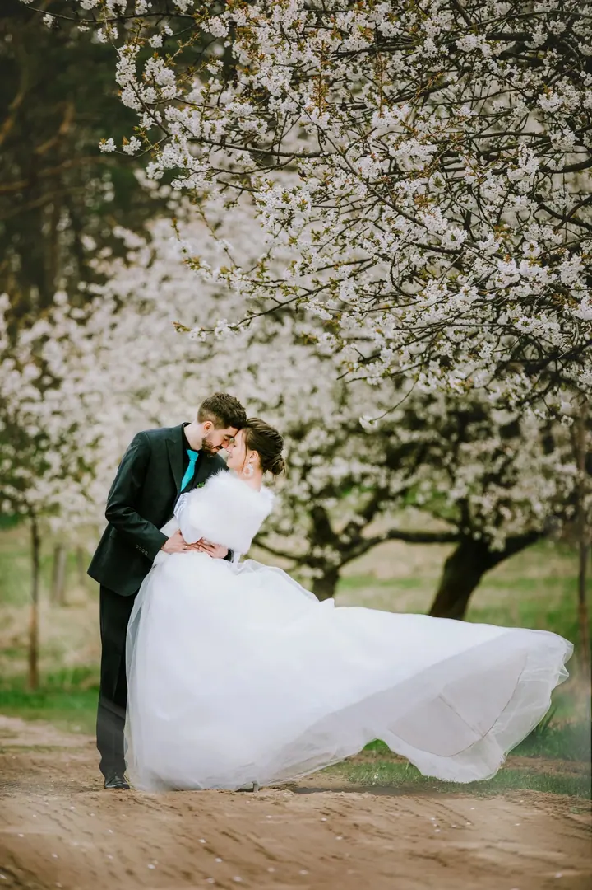

jedna
Svatební fotografie
Provedu vás svatebním dnem od obřadu po společné procházky. Fotím přirozeně, v barvách i černobíle, s důrazem na drobné detaily, jako jsou prstýnky nebo spojené ruce.

Svatební a portrétní fotografka · Lázně Bohdaneč, Pardubický kraj

Jmenuji se Barbara Poláková a fotím svatby a portréty v Lázních Bohdanči a okolí. Nejraději pracuji s přirozeným světlem, venku mezi stromy i v prosvětlených sálech.
Více o mně
Co fotím
jedna
Provedu vás svatebním dnem od obřadu po společné procházky. Fotím přirozeně, v barvách i černobíle, s důrazem na drobné detaily, jako jsou prstýnky nebo spojené ruce.
dvě
Portrétní focení venku, v rozkvetlých zahradách i v ulicích města. Hledám měkké světlo a polohy, ve kterých se budete cítit sami sebou.
Den, ke kterému se budete rádi vracet


Za objektivem
Jsem fotografka z Pardubického kraje a věnuji se hlavně svatbám. Baví mě být u toho celý den, od chvíle, kdy nevěsta stojí v sále s kyticí v ruce, až po klidnou procházku sadem, kdy už je po obřadu.
Kromě svateb fotím portréty. Ráda vyrážím ven, do rozkvetlých zahrad nebo mezi městskou architekturu, a hledám světlo, které vám bude slušet. Část fotek dělám barevně, část černobíle, podle toho, co se k chvíli hodí víc.
Záleží mi na tom, abyste se před objektivem cítili dobře. Když se uvolníte, fotky pak působí přirozeně a opravdu jako vy.
Barbara
Napište mi přes formulář termín a místo. Hned vám dám vědět, jestli mám volno.
Probereme, jak si den nebo focení představujete, co je pro vás důležité a kde budeme fotit.
V den focení se postarám o to, abyste se mohli soustředit na sebe a ne na foťák. Vedu vás jen tam, kde je to potřeba.
Fotky pečlivě vyberu a upravím a pošlu vám je v online galerii, odkud si je stáhnete.
Portfolio
Fotografie jsou ilustrační
Otázky
Jsem z Lázní Bohdanče a fotím hlavně v Pardubickém kraji. Pokud plánujete svatbu jinde, napište mi a domluvíme se.
Obojí. Většinu fotek dostanete barevně a některé chvíle zpracuji i černobíle, protože tak často vyniknou víc.
Vůbec ne. Během focení vám poradím, jak se postavit, a nechám prostor i pro přirozené chvíle, kdy na mě nemusíte myslet.
Svatební termíny se zaplňují dřív, proto mi napište, jakmile budete znát datum. Portréty se dají domluvit i v kratším termínu.